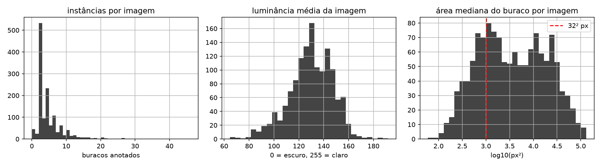
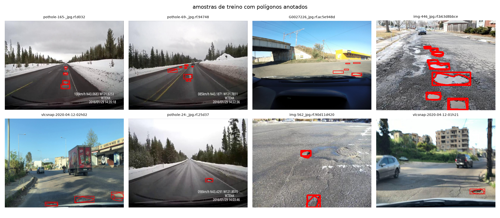
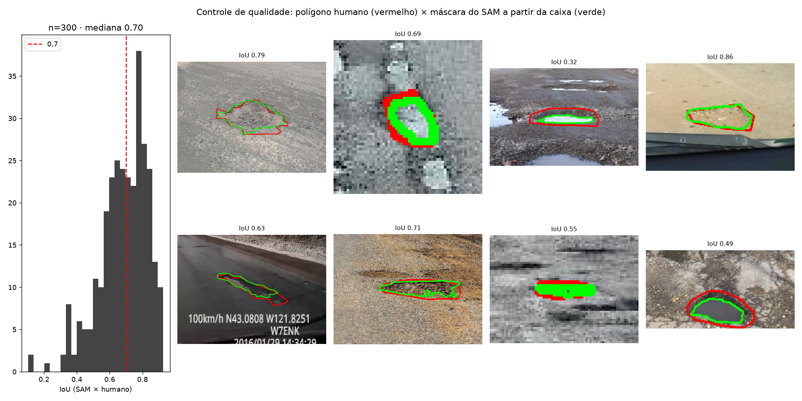
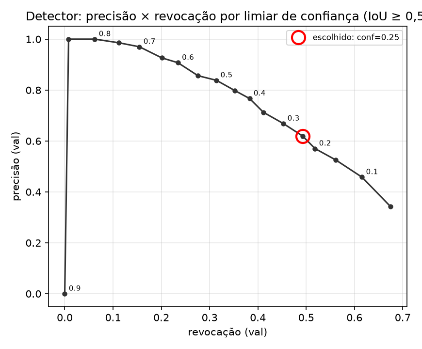
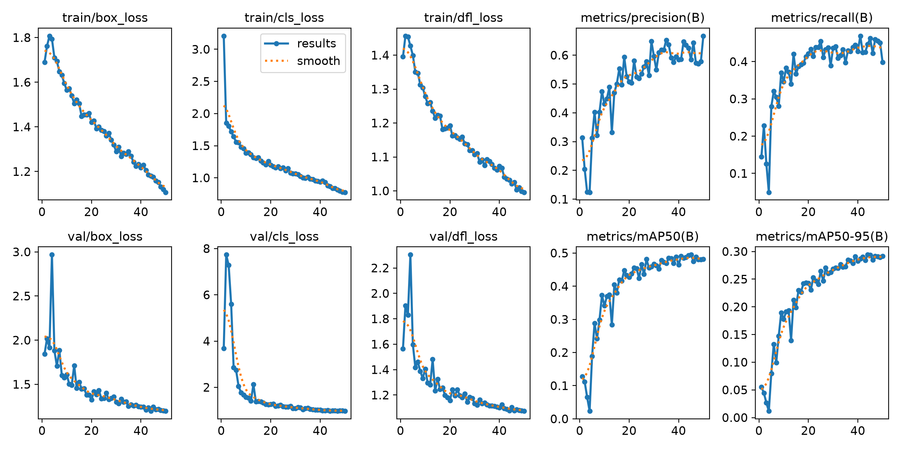
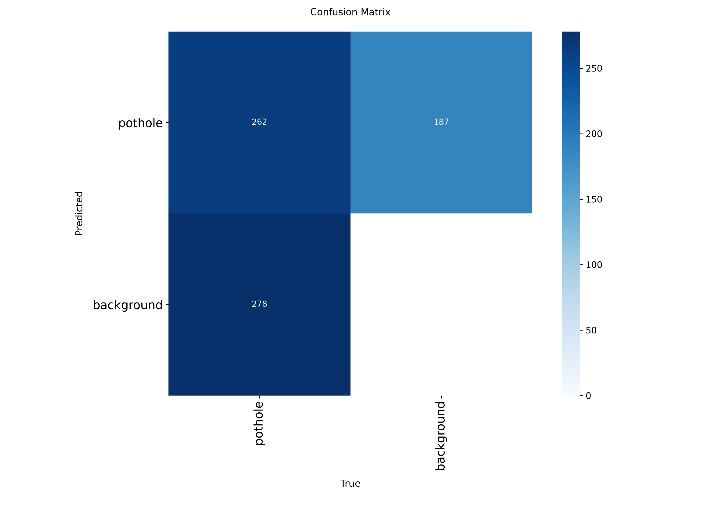
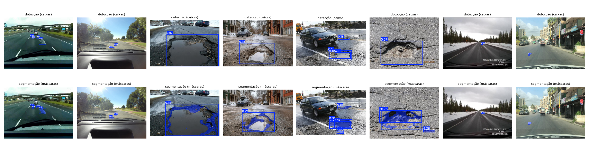
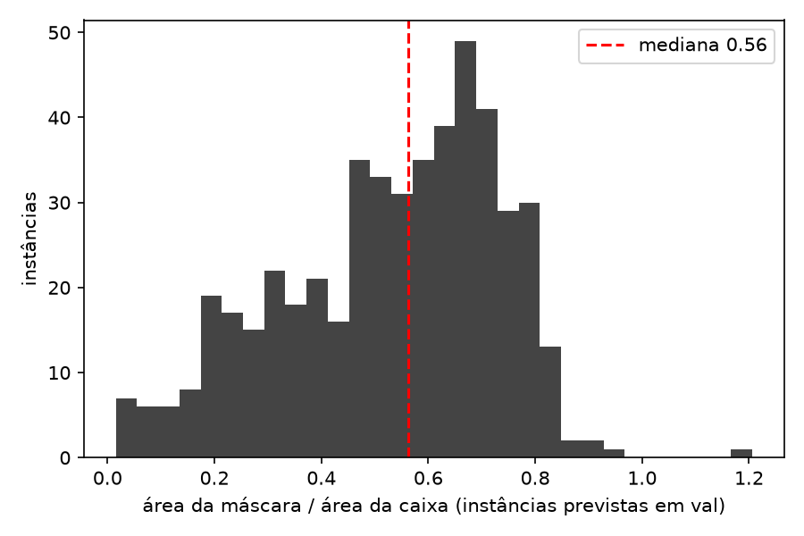
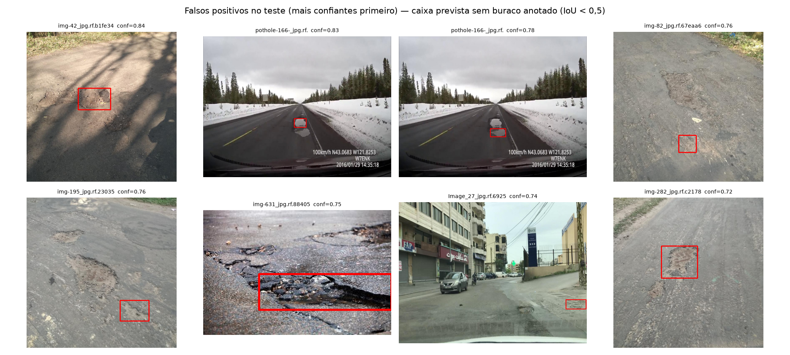
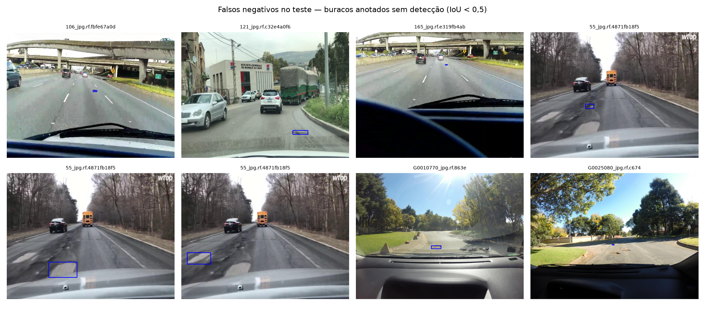

| Disciplina | Visão Computacional e Reconhecimento de Padrões — Prof. Dr. Romes Heriberto Pires de Araújo |
| Autor | Diego Nunes de Morais — trabalho individual |
| Data | 20 de setembro de 2026 |
| Cenário | Cidades Inteligentes — buracos em vias |
| Repositório | https://github.com/diegoedataengineer/sistematizacao-visao-computacional |
| Pesos treinados | Release v1.0 — det_s_best.pt, seg_s_best.pt, baseline_n_best.pt |
| Vídeo com inferência | |
| Vídeo-pitch |
Este documento descreve a construção, ponta a ponta, de um sistema que detecta e segmenta buracos em vias urbanas a partir de imagens capturadas por veículos em circulação, e demonstra o sistema em vídeo. O escopo cobre a escolha e a inspeção do dataset, a correção e o refino das anotações, o treino de um detector e de um segmentador de instâncias, a avaliação com protocolo de teste único, a análise de erros e a aplicação em vídeo com rastreamento.
Duas escolhas orientaram o trabalho e explicam boa parte dos resultados adiante.
A primeira é não confiar nas anotações do dataset sem inspecioná-las. O dataset público escolhido misturava, nos mesmos arquivos, instâncias anotadas por caixa e por polígono; a biblioteca de treino descartava esses arquivos em silêncio, e o primeiro treino usou 59 das 1 076 imagens sem avisar. Detectar isso, corrigir o formato e refinar as máscaras com um modelo de fundação (SAM) consumiu a primeira noite e mudou o que o número de segmentação significa (seção 3).
A segunda é medir o desempenho realizável, não o aparente. O conjunto de teste foi avaliado uma única vez, com limiar e modelo escolhidos em validação; o mAP é calculado no protocolo padrão, mas a precisão e a revocação que reportamos são as do ponto de operação que um sistema real usaria, e os erros foram inspecionados um a um. O resultado inclui um achado desconfortável: boa parte dos "falsos positivos" mais confiantes são buracos reais que o dataset não anotou.
Todas as decisões de projeto estão registradas em ADRs (docs/adr/), com contexto, alternativas descartadas e consequências. Todo número deste relatório vem de execução real, gravado em figs/resultados.json, figs/tabela_final.csv e runs/, incluindo os desfavoráveis.
Prefeituras recebem reclamações de buracos de forma dispersa e sem medida do dano. O que uma equipe de manutenção precisa é de uma lista priorizável: onde há buracos, quantos são por trecho e qual a extensão de cada um. Três características definem o problema:
Detecção e segmentação são tarefas complementares, não redundantes. A caixa localiza e conta; a máscara mede. Um buraco alongado ou diagonal ocupa uma fração pequena da sua caixa — a seção 6.3 quantifica isso — e priorizar por área da caixa superestimaria o dano.
O custo dos erros é assimétrico. Um buraco não detectado (falso negativo) some da lista de manutenção; um alarme falso (falso positivo) custa a revisão de um operador. O ponto de operação do detector foi escolhido com essa assimetria em mente (seção 8).
O sistema opera em vídeo, de um veículo em movimento. Isso impõe um detector de um estágio, em tempo real, e um rastreador para não contar o mesmo buraco duas vezes (seção 9).
Trabalhamos com classe única (pothole). Rachaduras, remendos e tampas de bueiro não são alvo e aparecem na análise de erros como confusores.
Potholes and Roads Instance Segmentation, workspace pothole-vsmtu, Roboflow Universe, versão 5, licença CC BY 4.0, obtido em 18/09/2026 em universe.roboflow.com/pothole-vsmtu/potholes-and-roads-instance-segmentation/dataset/5. O dataset original tem duas classes (pothole, road); mantivemos apenas pothole. Os três splits são os do próprio dataset, sem redistribuição.
| Característica | Valor |
|---|---|
| Imagens | 1 355 — treino 1 076 · validação 138 · teste 141 |
Instâncias pothole |
6 264 — treino 5 097 · validação 627 · teste 540 |
| Instâncias por imagem | 4,7 (treino) · 4,5 (validação) · 3,8 (teste) |
| Imagens sem buraco | 29 · 6 · 11 |
| Resoluções dominantes | 1227×920 (714 imagens) · 720×720 (280) · ~400×300 (poucas) |
| Instâncias pequenas (< 32² px) | 40% · 41% · 37% |
| Anotação | polígonos (45%) e caixas (55%) — ver 3.1 |
Na inspeção das labels, 2 834 instâncias (45%) estavam em polígono e 3 430 (55%) apenas em caixa (cinco números por linha), misturadas nos mesmos arquivos — 1 270 arquivos com os dois formatos. O Ultralytics rejeita arquivos que misturam caixa e polígono ("labels mix") e os descarta como corrompidos, sem erro visível. O primeiro treino terminou em três minutos: havia usado 59 imagens de treino e 9 de validação. Detectamos o problema pelo tamanho anômalo do conjunto de validação no log, e não pela biblioteca.
A correção converte cada caixa em um polígono retangular de quatro pontos (scripts/filtrar_classes.py) e apaga os caches de labels. Para a detecção isso é neutro — as caixas são derivadas dos polígonos. Para a segmentação, significava que mais da metade das máscaras de referência seriam retângulos, e a métrica de máscara mediria, em parte, "quão bem o modelo desenha retângulos".

Três observações da exploração condicionam o que vem depois. A distribuição de instâncias por imagem tem moda em duas e cauda longa (há imagens com mais de vinte buracos anotados): cenas de dashcam em rodovia alternam com fotos a pé de trechos muito degradados. A luminância média concentra-se entre 100 e 160 — cenas diurnas, sem noite; o modelo não foi exposto a condições noturnas. E cerca de 40% das instâncias têm menos de 32² pixels: buracos distantes, de poucos pixels, que antecipam a dificuldade de revocação discutida na seção 7.

As amostras mostram a heterogeneidade do domínio: rodovias com neve (dashcam com sobreposição de velocidade e coordenadas), ruas urbanas com carros e caminhões, fotos de perto de asfalto molhado. Também mostram os confusores que reaparecem nos erros — uma tampa de bueiro ao lado de um buraco, remendos escuros, poças.
Para recuperar contornos reais nas 3 430 instâncias anotadas só por caixa, geramos a máscara de cada uma com o Segment Anything Model (ViT-B), usando a caixa humana como prompt, recortando a máscara pela caixa e mantendo o maior componente conexo (scripts/refinar_mascaras_sam.py). A pergunta que precisava de resposta antes de substituir as anotações era: a máscara do SAM é melhor que o retângulo?
Medimos isso em 300 instâncias que tinham polígono humano, derivando a caixa do polígono, pedindo a máscara ao SAM e comparando as duas coisas com o polígono original. A mesma amostra serviu para medir o retângulo.
| Referência comparada ao polígono humano | IoU mediano | IoU médio | P10 | P90 | ≥ 0,7 |
|---|---|---|---|---|---|
| Retângulo (a anotação original das instâncias só-caixa) | 0,684 | 0,669 | 0,522 | 0,790 | 43% |
| Máscara do SAM a partir da caixa | 0,703 | 0,685 | 0,497 | 0,851 | 51% |

O ganho na mediana é modesto, e o motivo está na figura: os polígonos humanos desta base são pouco precisos — um simples retângulo já concorda 0,68 com eles. Nos casos de IoU baixo (0,32 e 0,49 na figura), é o polígono humano que engloba asfalto ao redor do buraco; o contorno do SAM segue a borda real. O SAM supera o retângulo em todas as estatísticas, com ganho maior na cauda alta (P90 0,85 contra 0,79), e foi adotado como referência para treino e teste de segmentação. As anotações originais foram preservadas (labels_original/) para que a avaliação reporte as métricas contra as duas versões (seção 6.3). Das 3 430 caixas, 3 429 foram refinadas; uma permaneceu retângulo por o SAM não devolver máscara válida.
Três conjuntos com papéis estritos. train ajusta os pesos. val escolhe o modelo (best.pt pelo fitness do Ultralytics), o limiar de confiança e o IoU do NMS. test foi avaliado uma única vez ao final, com todos os parâmetros congelados, e o resultado entrou neste relatório sem retoque. A seção 11 registra, por honestidade, duas execuções sobre o teste que foram descartadas por erro de configuração antes da avaliação final.
Detecção: YOLO11s (Ultralytics 8.4.155), fine-tuning a partir dos pesos pré-treinados no COCO. Um detector de um estágio porque o cenário é vídeo de veículo em movimento, com requisito de tempo real e implantação futura embarcada; Faster R-CNN seria a escolha para imagens estáticas de alta resolução onde a latência não importa. Baseline: YOLO11n por 30 épocas.
Segmentação: YOLO11s-seg, sobre as mesmas imagens e o mesmo data.yaml, com protocolo idêntico ao do detector. Segmentação de instâncias, porque buracos se contam e se medem um a um; U-Net e DeepLab (semântica) perderiam a noção de instância, e Mask R-CNN exigiria outro pipeline de treino sem ganho justificável no prazo.
Nenhum treino do zero. Com 1 076 imagens, transferir de pesos pré-treinados é o caminho padrão; a comparação com um modelo maior (YOLO11m) na seção 6.4 confirma que capacidade adicional não se converte em desempenho nesta escala de dados.
Detectores produzem scores; o limiar transforma score em decisão e é uma escolha de custo, não um detalhe técnico. Varremos o limiar de confiança de 0,05 a 0,90 em validação, com precisão e revocação calculadas por casamento um-para-um (guloso por score, IoU ≥ 0,5) a partir de uma única inferência em conf = 0,001:
| conf | 0,10 | 0,15 | 0,20 | 0,25 | 0,30 | 0,35 | 0,40 | 0,50 | 0,60 |
|---|---|---|---|---|---|---|---|---|---|
| Precisão | 0,458 | 0,525 | 0,570 | 0,619 | 0,668 | 0,713 | 0,767 | 0,838 | 0,907 |
| Revocação | 0,616 | 0,561 | 0,518 | 0,493 | 0,453 | 0,411 | 0,383 | 0,314 | 0,234 |
| F1 | 0,525 | 0,543 | 0,543 | 0,549 | 0,540 | 0,522 | 0,511 | 0,457 | 0,373 |

A regra inicial do projeto (ADR-S05) era "maior revocação com precisão ≥ 0,70", pensada antes de ver a curva; aplicada a este modelo, ela escolheria conf = 0,35 e perderia 59% dos buracos. Comparamos três opções com os números reais — piso de precisão 0,70, máximo F1, piso 0,55 — e adotamos o máximo F1: conf = 0,25, precisão 0,62 e revocação 0,49 em validação. É a regra mais defensável e, para manutenção viária, o custo de um buraco não detectado pesa mais que o de um alarme revisado por um operador. IoU NMS = 0,7. O mesmo limiar vale para teste, vídeo e demonstração.
mAP@0,5 e mAP@0,5:0,95 (caixas e máscaras), pelo Ultralytics no limiar padrão 0,001 — o protocolo COCO; precisão e revocação no ponto de operação, por casamento um-para-um com IoU ≥ 0,5 — o que um sistema real entrega com conf = 0,25; matriz de confusão; IoU e Dice por imagem das máscaras, contra as referências refinadas e contra as originais; análise qualitativa de falsos positivos e negativos e revocação por tamanho. Acurácia não aparece: com classe única e fundo dominante, seria alta e inútil.
| Parâmetro | Valor |
|---|---|
| Modelos base | yolo11s.pt / yolo11s-seg.pt (COCO) · baseline yolo11n.pt |
| Épocas / parada antecipada | 50 / patience 10 — nenhum treino parou antes das 50 |
| Tamanho de imagem | 640 (extras: 800) |
| Batch | 16 |
| Otimizador | escolhido automaticamente pelo Ultralytics (auto), lr0 0,01, momentum 0,937, weight decay 0,0005 |
| Augmentation | padrão Ultralytics: mosaic 1,0 · fliplr 0,5 · hsv_h/s/v 0,015/0,7/0,4 · scale 0,5 · translate 0,1 |
| Seed / determinístico | 0 / sim |
| Camadas congeladas | nenhuma |
| Hardware | GTX 1060 6 GB (local) |
| Treino | Épocas | Tempo | s/época |
|---|---|---|---|
| YOLO11n (baseline) | 30 | 31 min | 62 |
| YOLO11s — detecção | 50 | 55 min | 67 |
| YOLO11s-seg — segmentação | 50 | 75 min | 90 |
| YOLO11s @ 800 px (extra) | 50 | 100 min | 120 |
| YOLO11m (extra) | 50 | 120 min | 144 |

No detector, a perda de caixa caiu de 1,68 para 1,10 no treino e de 1,84 para 1,19 na validação; o melhor mAP@0,5:0,95 em validação (0,294) ocorreu na época 44 de 50 e a perda de validação ainda caía ao final. As duas perdas caem juntas: não há sinal de sobreajuste forte, e mais épocas provavelmente renderiam um pouco mais.
O pipeline inteiro — download, filtro das labels, EDA, controle de qualidade e refino com SAM, cinco treinos, avaliação — rodou sem intervenção manual durante a noite (scripts/pipeline.sh), com retomada automática a partir do último checkpoint em caso de interrupção.
conf = 0,25 · IoU NMS = 0,7 · imgsz = 640 (exceto onde indicado). O teste foi avaliado uma única vez.
| Modelo | Split | mAP@0,5 | mAP@0,5:0,95 | Precisão | Revocação | Mask mAP@0,5 | Mask mAP@0,5:0,95 |
|---|---|---|---|---|---|---|---|
| YOLO11s — principal | val | 0,498 | 0,298 | 0,619 | 0,493 | — | — |
| YOLO11s — principal | teste | 0,487 | 0,287 | 0,645 | 0,518 | — | — |
| YOLO11n (baseline, 30 ép.) | val | 0,437 | 0,234 | 0,640 | 0,431 | — | — |
| YOLO11n (baseline, 30 ép.) | teste | 0,421 | 0,201 | 0,612 | 0,450 | — | — |
| YOLO11s @ 800 px (extra) | val | 0,508 | 0,302 | 0,647 | 0,501 | — | — |
| YOLO11s @ 800 px (extra) | teste | 0,517 | 0,306 | 0,655 | 0,485 | — | — |
| YOLO11m (extra) | val | 0,491 | 0,288 | 0,639 | 0,455 | — | — |
| YOLO11m (extra) | teste | 0,502 | 0,284 | 0,674 | 0,487 | — | — |
| YOLO11s-seg — principal | val | 0,508 | 0,297 | 0,649 | 0,514 | 0,306 | 0,132 |
| YOLO11s-seg — principal | teste | 0,493 | 0,292 | 0,663 | 0,496 | 0,319 | 0,156 |
No teste, o detector principal obteve mAP@0,5 = 0,487 e mAP@0,5:0,95 = 0,287, com precisão 0,645 e revocação 0,518 no ponto de operação — 280 acertos, 154 falsos positivos e 260 falsos negativos em 540 buracos anotados. A diferença val→teste em mAP@0,5 foi de −0,012, dentro do esperado para uma única execução e sem sinal de sobreajuste ao conjunto de validação. O YOLO11s supera o baseline YOLO11n em 0,066 de mAP@0,5 no teste, com o dobro de épocas e 3,6× os parâmetros.

Com classe única, a matriz reduz-se a buraco × fundo. A figura é gerada pelo Ultralytics com o critério de casamento dele (IoU 0,45), por isso seus números — 262 acertos, 187 previsões sem buraco anotado, 278 buracos sem previsão — diferem ligeiramente da contagem um-para-um a IoU 0,5 usada na tabela (280 / 154 / 260). A leitura é a mesma: no ponto de operação, o modelo perde cerca de metade dos buracos anotados e um terço das suas previsões não casa com anotação — e a seção 7 mostra que boa parte dessas previsões "erradas" estão certas.

Nas mesmas imagens, as máscaras seguem o contorno real: buracos cheios de água ficam delimitados pela lâmina d'água, áreas grandes de dano são divididas em componentes, e em buracos distantes de dashcam a máscara praticamente coincide com a caixa — poucos pixels não têm forma.

Quantificando: nas 496 instâncias previstas em validação, a razão área da máscara / área da caixa tem mediana 0,56 (P10 0,22, P90 0,77). A caixa superestima a área do buraco em cerca de 44% no caso típico, e em mais de 4× nos 10% mais alongados. Para priorizar manutenção por extensão do dano, a máscara é a medida certa.
No teste, o IoU e o Dice médios por imagem das máscaras previstas foram 0,510 e 0,624 contra as referências refinadas por SAM (IoU mediano 0,565, 138 imagens com buraco ou previsão), e 0,355 e 0,490 contra as anotações originais em retângulo. A diferença entre as duas linhas mede o quanto as referências mudaram com o refino — e confirma que o modelo aprendeu contornos, não retângulos.
Dois experimentos com o mesmo protocolo, uma execução cada. Com resolução de entrada 800 px, o YOLO11s obteve 0,517 / 0,306 no teste (val 0,508 / 0,302), cerca de 0,03 acima do modelo principal em 640 px — consistente com a EDA (40% das instâncias são pequenas) e com os falsos negativos de buracos distantes: mais pixels por buraco ajudam, ao custo de 1,8× o tempo por época. O YOLO11m em 640 px ficou em 0,502 / 0,284 (val 0,491 / 0,288), com precisão maior (0,674) e revocação menor (0,487) que o YOLO11s: um modelo 2,7× maior não trouxe ganho com 1 076 imagens de treino e custou 2,1× o tempo por época.
Mantivemos o YOLO11s @ 640 como modelo principal porque a escolha foi feita em validação antes destes experimentos existirem — trocar de modelo depois de ver o teste violaria o protocolo. A resolução 800 fica registrada como o próximo passo de maior retorno.
Todos os treinos usam seed = 0 e deterministic = True; os pesos finais estão na Release v1.0, os hiperparâmetros efetivos em runs/*/args.yaml e as curvas em results.csv. O notebook notebooks/sistematizacao.ipynb reproduz o pipeline inteiro no Colab (com TREINAR = False baixa os pesos e só avalia; com TREINAR = True retreina em ~1 h num A100). Não fizemos validação cruzada — uma execução por configuração, por custo de GPU — e diferenças de poucos milésimos entre modelos não são estatisticamente distinguíveis.

Os oito falsos positivos mais confiantes (0,72–0,84) têm um padrão claro. Em seis deles — img-42, img-82, img-195, img-282 e duas caixas em pothole-166 — a caixa prevista está sobre um buraco real que não foi anotado: a anotação humana do dataset é incompleta, e o modelo está certo contra o gabarito. Em img-631 a caixa cobre uma área grande de asfalto rachado com água — dano real, de fronteira ambígua entre rachadura e buraco. Em pothole-166 aparecem duas caixas parcialmente sobrepostas sobre a mesma mancha: o NMS com IoU 0,7 não as funde, e a segunda vira falso positivo; um IoU de NMS de 0,5 reduziria esse caso. Só Image_27 — uma mancha escura pequena no asfalto — é um falso positivo sem dano visível.
A consequência é direta: uma parte relevante dos 154 falsos positivos do teste é ruído de rótulo, não erro do modelo, e a precisão de 0,645 é um limite inferior da precisão real.

Três modos. Buracos minúsculos e distantes em rodovia, de poucos pixels (106, 165, G0025080) — irrelevantes para a aplicação enquanto estão longe, e detectáveis quando o veículo se aproxima. Baixo contraste em asfalto molhado e remendado (55, com três instâncias perdidas, duas delas grandes: manchas claras de desgaste anotadas como buraco, de fronteira discutível). Contraluz com flare (G0010770), que lava o contraste do piso.
| Tamanho da instância anotada | Instâncias | Detectadas | Revocação |
|---|---|---|---|
| pequena (< 32² px) | 198 | 97 | 0,490 |
| média (32²–96² px) | 208 | 115 | 0,553 |
| grande (> 96² px) | 134 | 68 | 0,507 |
A revocação é semelhante entre tamanhos: o tamanho não explica sozinho os falsos negativos. As instâncias grandes perdidas são, em geral, áreas de desgaste anotadas de forma generosa em asfalto molhado — o caso 55 acima — e não buracos nítidos. A fronteira semântica entre buraco, desgaste e rachadura não está definida no dataset, e o modelo herda essa indefinição.
O limiar de confiança é um ponto de operação, e a tabela da seção 4.3 é a análise de sensibilidade: entre conf = 0,20 e conf = 0,35 a precisão vai de 0,57 a 0,71 enquanto a revocação cai de 0,52 para 0,41. Para o produto descrito na seção 2 — uma lista de manutenção revisada por um operador antes da ordem de serviço — um falso positivo custa segundos de revisão; um falso negativo é um buraco que não entra na lista. Isso justifica operar em conf = 0,25 ou abaixo, e não no limiar de precisão 0,70 que a regra inicial sugeria.
Duas observações operacionais. Primeiro, como o vídeo passa pelo mesmo buraco em dezenas de quadros, a revocação efetiva por buraco é maior que a revocação por quadro medida no teste: basta detectá-lo em um quadro para que o rastreador o mantenha (seção 9). Segundo, como os falsos positivos mais confiantes são buracos reais não anotados, a fila de revisão do operador recebe menos alarmes falsos do que a precisão de 0,645 sugere.
A inferência no vídeo usa o segmentador (caixas + máscaras) com conf = 0,25 e IoU NMS = 0,7, e o rastreador ByteTrack integrado ao Ultralytics (model.track(..., tracker="bytetrack.yaml", persist=True)), que associa detecções de baixa confiança num segundo estágio — útil quando o buraco entra e sai de oclusão parcial. Buracos são estáticos no mundo; o movimento é da câmera. O filtro de Kalman de velocidade constante do ByteTrack funciona bem em velocidade estável e tende a trocar identidades em freadas e curvas fechadas; a contagem por identidade única é o que evita contar o mesmo buraco a cada quadro.
from ultralytics import YOLO
seg = YOLO("runs/segment/seg_s/weights/best.pt")
seg.predict("video/cenario.mp4", conf=0.25, iou=0.7, imgsz=640, save=True, project="video", name="seg")
seg.track("video/cenario.mp4", tracker="bytetrack.yaml", persist=True, conf=0.25, iou=0.7, save=True)
O sistema entrega detecção e segmentação de buracos com mAP@0,5 de 0,487 e mAP@0,5:0,95 de 0,287 no teste para a detecção, mask mAP@0,5 de 0,319 para a segmentação, e precisão 0,645 / revocação 0,518 no ponto de operação escolhido em validação. A máscara acrescenta à caixa exatamente o que o problema pede: a área real do dano, que a caixa superestima em 44% no caso típico.
Os números são modestos em comparação com o que se vê publicado sobre datasets de buracos, e a análise de erros explica por quê sem apelar para o modelo: as anotações do dataset são incompletas e imprecisas — buracos reais sem anotação, polígonos que englobam asfalto, fronteiras indefinidas entre buraco e desgaste. Um modelo avaliado contra um gabarito com esses defeitos parece pior do que é.
Os falsos positivos mais confiantes são buracos reais. Seis dos oito falsos positivos de maior score no teste estão sobre buracos não anotados. A precisão reportada é um limite inferior, e a intervenção de maior retorno não é no modelo: é re-anotar o conjunto de teste.
O refino com SAM melhorou pouco a mediana — porque os humanos anotam mal. O SAM concorda 0,70 com os polígonos humanos; um retângulo concorda 0,68. A inspeção visual mostra que, nos casos de baixa concordância, o SAM está mais perto da borda real do que o anotador. Adotar as máscaras do SAM foi a decisão certa, mas o número que a justifica é o P90, não a mediana.
Um modelo maior não ajudou; mais resolução ajudou. O YOLO11m ficou abaixo do YOLO11s; o YOLO11s em 800 px ficou acima de ambos. Com 1 076 imagens e 40% de instâncias pequenas, o gargalo é informação por buraco, não capacidade do modelo.
O tamanho da instância não explica os falsos negativos. A revocação é praticamente igual em instâncias pequenas, médias e grandes — as grandes perdidas são áreas de desgaste anotadas de forma generosa, não buracos nítidos. A fronteira semântica do rótulo é o problema.
O teste foi tocado três vezes, não uma. Duas execuções anteriores à avaliação final foram descartadas por erro de configuração (limiar errado; casamento não um-para-um). Nenhum parâmetro foi alterado a partir delas, mas a rigor o protocolo de teste único não foi cumprido à letra, e preferimos registrar isso a omiti-lo.
Re-anotar o conjunto de teste, ou ao menos os falsos positivos de alta confiança, para medir o sistema com um gabarito justo. Treinar em 800 px como configuração principal. Coletar e anotar imagens de vias brasileiras — o vídeo desta entrega é o primeiro teste de generalização de domínio. Reduzir o IoU do NMS para 0,5 e medir o efeito nas caixas aninhadas. Para operar: exportar para ONNX/TensorRT com a perda de acurácia medida por estágio de quantização (na GTX 1060 o YOLO11s infere em ~12 ms por imagem, mas o orçamento de 33 ms a 30 FPS inclui decodificação e rastreamento — detectar a cada N quadros e rastrear nos intermediários é o padrão para caber na borda); monitorar a distribuição dos scores e a taxa de detecções por trecho para flagrar o drift de um modelo treinado em vias estrangeiras; e processar na borda armazenando apenas metadados, porque o vídeo captura placas e pessoas.
Declaração de uso de IA. Ferramentas de IA generativa foram usadas como apoio na organização do cronograma, na estruturação inicial dos scripts e na revisão do texto; todo o código foi executado, verificado e adaptado pelo autor, e os resultados, figuras e análises são de sua autoria.
Referências. Dataset: Potholes and Roads Instance Segmentation, pothole-vsmtu, Roboflow Universe, v5, CC BY 4.0 · Jocher, G. et al. Ultralytics YOLO11, 2024 · Redmon, J. et al. You Only Look Once, CVPR 2016 · Kirillov, A. et al. Segment Anything, ICCV 2023 · Zhang, Y. et al. ByteTrack, ECCV 2022 · Kalman, R. E., 1960 · Heriberto, R. Apostilas de Visão Computacional (Vols. I e II), Vídeo com Visão Computacional e Reconhecimento de Padrões, CEUB, 2026.
Reprodução:
git clone https://github.com/diegoedataengineer/sistematizacao-visao-computacional
cd sistematizacao-visao-computacional && pip install -r requirements.txt
gh release download v1.0 -p "*.pt" # pesos treinados
python scripts/avaliar.py --det runs/detect/det_s --seg runs/segment/seg_s --regra f1
python tools/build_report.py # este relatório em HTML e PDF